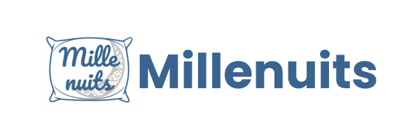

Au cours de ma formation, j'ai réalisé plusieurs projets techniques qui m'ont permis de mettre en pratique mes compétences en réseau, système et sécurité.
Ces projets illustrent ma capacité à concevoir, déployer et sécuriser des infrastructures informatiques :
Mise en place d'un réseau d'entreprise avec architecture hiérarchique et segmentation VLAN.
Créer une infrastructure réseau scalable pour une PME avec 3 départements (IT, Ventes, Admin) en assurant isolation et sécurité.
Réduction de 40% du trafic broadcast, isolation complète des départements, temps de convergence OSPF < 2s.
Déploiement d'un domaine Windows Server avec gestion centralisée des utilisateurs et stratégies de groupe.
Centraliser l'authentification et la gestion des 50+ utilisateurs avec application automatique des politiques de sécurité.
Temps de connexion réduits de 60%, gestion centralisée 100%, sauvegardes automatiques avec RTO < 30min.
Déploiement d'infrastructure virtualisée pour optimiser les ressources matérielles.
Consolider 10 serveurs physiques sur 3 hôtes virtuels avec haute disponibilité et économie d'énergie.
Réduction de 70% des coûts énergétiques, consolidation 10:1, temps de provisionnement VM < 5min.
Architecture de sécurité complète avec firewall, DMZ, portail captif et ACL pour protection multicouche.
Mettre en place une architecture de sécurité en profondeur avec segmentation, contrôle d'accès et surveillance continue.
Blocage de 95% des menaces, segmentation complète des accès, temps de réponse < 15min, conformité RGPD assurée.
Mes projets techniques complets avec documentation détaillée et mise en œuvre concrète :

Projet complet de refonte d'infrastructure pour l'entreprise Mille Nuits avec segmentation réseau, modernisation du parc et sécurisation des services.
Croissance importante de l'entreprise Mille Nuits nécessitant la modernisation de l'infrastructure suite à des incidents de sécurité. Objectifs : segmentation réseau, remplacement du parc vieillissant, sécurisation des accès et structuration de la gestion des services.
SP1 : Gestion infrastructure réseau (VLAN, routage, Wi-Fi sécurisé)
SP2 : Gestion parc informatique (FOG, Windows 11, ticketing)
SP3 : Services AD/DHCP (contrôleur de domaine, NAS)
SP4 : Espace développement (DMZ Docker, portail captif)
Documentation technique complète générée avec MkDocs, incluant procédures d'installation, configurations, schémas topologiques et guides de maintenance. Déploiement automatisé via GitHub Actions.
Gestion patrimoine informatique, conception infrastructure, sécurité cybersécurité, déploiement et documentation technique selon référentiel BTS SIO.
Étude des besoins et définition des objectifs techniques
Élaboration de l'architecture et choix des solutions
Mise en œuvre, configuration et tests
Rédaction des procédures et transfert de compétences
Je continue de travailler sur de nouveaux projets personnels, notamment un homelab complet avec Active Directory, serveurs web sécurisés, et solutions de monitoring. N'hésitez pas à consulter mon GitHub pour suivre mon évolution !